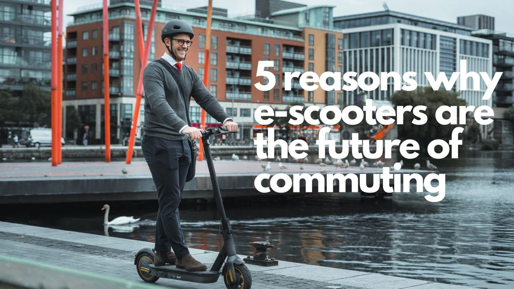
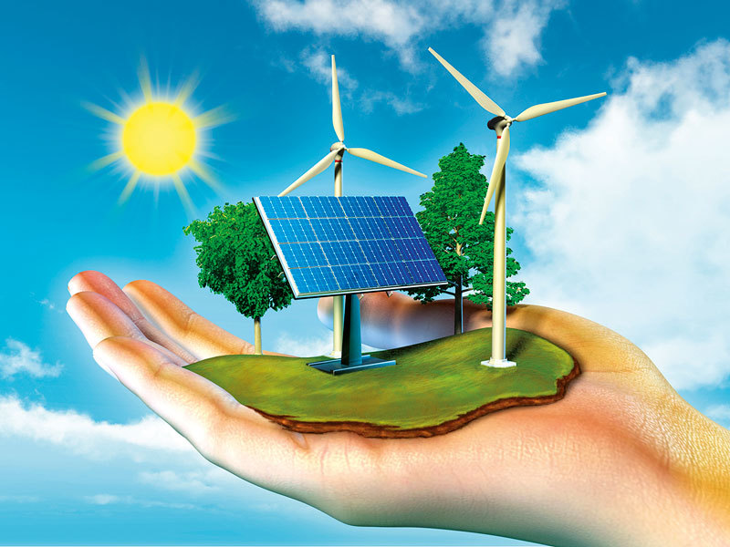

Watch the video below.
Can you think of other ways of viewing the electric scooters?
What do you see? (From module 2.4).
People do not even have the decency to park them correctly, leading to some plance in Norway introducing penalties and wanting to remove the e-scooter entirely.
Since they have to be mostly driven on roads, people using the e-scooter need to have basic knowledge of traffic laws.
It is not strange that the e-scooters have a short lifespan of 2 months when they are getting vandalized all the time. I regurarly see some thrown into hedges,rivers and off steep hills.
With past experience in healthcare i notice that there are many serious accidents related to electric scooters. It is very easy to get injured if one falls.
Watch the video below.
Technological innovations can improve the lives of disadvantaged people in many ways. At the same time, the consumption of electronic devices has an environmental cost.
What are your thoughts about this dilemma?
